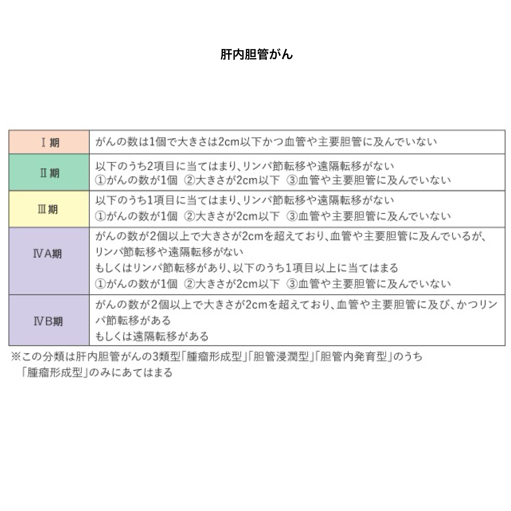
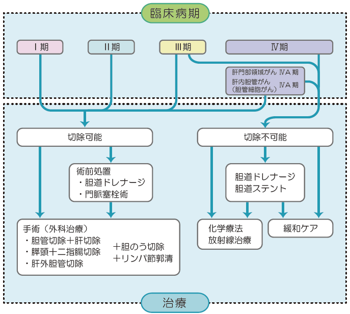
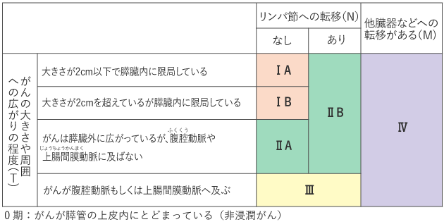
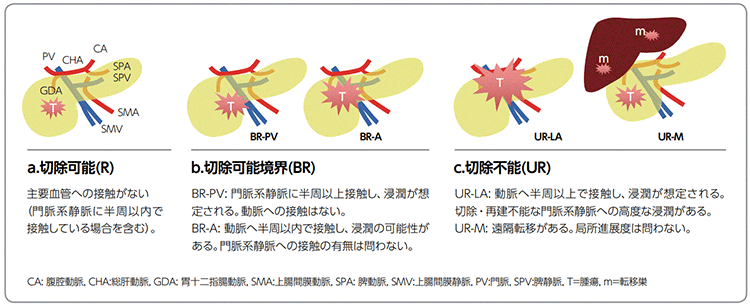
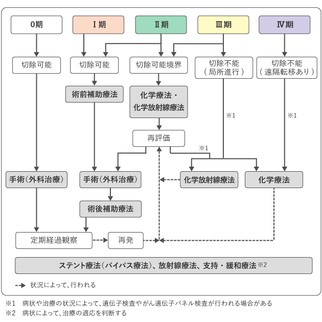

○金属ステント留置は膵炎・胆管炎のリスクが高まる．（ステントに隙間あるが閉塞されることも）
ERCPでワイヤーを膵管留置することで胆管が直線化しカニュレーションしやすくなる．
✔️胆

1 / 5

✔️膵


R(Resectable)：切除可能
BR(Borderline resectable)：境界切除可能
BR-PV：上腸間膜静脈/門脈に180度以上の接触・浸潤がある (十二指腸下縁を超えない)
BR-A：上腸間膜動脈あるいは腹腔動脈に180度未満の接触・浸潤がある．総肝動脈に接触・浸潤あるが、固有肝動脈/腹腔動脈に接触・浸潤なし．
UR(Unresectable)：切除不能
UR-LA：局所進行 BRの基準以上
UR-M：遠隔転移あり(M1)

イリノテカン UGT1A1 6,28の遺伝子型→野生型：リスク標準，ヘテロ(片方の変異)：中リスク，ホモや複合ヘテロ：高リスク